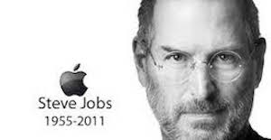

Co-founder, Chairman, and CEO of Apple Inc.
Primary Investor and CEO of Pixar
Founder and CEO of NeXT
Spouce
Laurene Powell
Died
October 5, 2011
Palo Alto, California, U.S.
Steven Paul "Steve" Jobs (February 24, 1955 – October 5, 2011) was an American entrepreneur, businessman, inventor, and industrial designer. He was the co-founder, chairman, and chief executive officer (CEO) of Apple Inc.; CEO and majority shareholder of Pixar; a member of The Walt Disney Company's board of directors following its acquisition of Pixar; and founder, chairman, and CEO of NeXT. Jobs and Apple co-founder Steve Wozniak are widely recognized as pioneers of the microcomputer revolution of the 1970s and 1980s.
Background Information
Jobs was born in San Francisco and adopted at birth; he was raised in the San Francisco Bay Area during the 1960s.Jobs briefly attended Reed College in 1972 before dropping out. He then decided to travel through India in 1974 seeking enlightenment and studying Zen Buddhism. Jobs' declassified FBI report stated that an acquaintance knew that Jobs had used the illegal drugs marijuana and LSD while he was in college. Jobs once told a reporter that taking LSD was "one of the two or three most important things" he did in his life.
Jobs and Wozniak co-founded Apple in 1976 to sell Wozniak's Apple I personal computer. The visionaries gained fame and wealth a year later for the Apple II, one of the first highly successful mass-produced personal computers. In 1979, after a tour of PARC, Jobs saw the commercial potential of the Xerox Alto, which was mouse-driven and had a graphical user interface (GUI). This led to development of the unsuccessful Apple Lisa in 1983, followed by the breakthrough Macintosh in 1984. In addition to being the first mass-produced computer with a GUI, the Macintosh introduced the sudden rise of the desktop publishing industry in 1985 with the addition of the Apple LaserWriter, the first laser printer to feature vector graphics. Following a long power struggle, Jobs was forced out of Apple in 1985.
After leaving Apple, Jobs took a few of its members with him to found NeXT, a computer platform development company specializing in state-of-the-art computers for higher-education and business markets. In addition, Jobs helped to initiate the development of the visual effects industry when he funded the spinout of the computer graphics division of George Lucas's Lucasfilm in 1986.[9] The new company, Pixar, would eventually produce the first fully computer-animated film, Toy Story—an event made possible in part because of Jobs's financial support.
In 1997, Apple acquired and merged NeXT, allowing Jobs to become CEO once again, reviving the company at the verge of bankruptcy. Beginning in 1997 with the "Think different" advertising campaign, Jobs worked closely with designer Jonathan Ive to develop a line of products that would have larger cultural ramifications: the iMac, iTunes and iTunes Store, Apple Store, iPod, iPhone, App Store, and the iPad. Mac OS was also revamped into OS X (renamed “macOS” in 2016), based on NeXT's NeXTSTEP platform.
Jobs was diagnosed with a pancreatic neuroendocrine tumor in 2003 and died on October 5, 2011 of respiratory arrest related to the tumor.

Steve Jobs - 1955-2011
Innovation and Design
The Apple II is an 8-bit home computer, one of the first highly successful mass-produced microcomputer products, designed primarily by Steve Wozniak (Jobs oversaw the development of the Apple II's unusual case and Rod Holt developed the unique power supply). It was introduced in 1977 at the West Coast Computer Faire by Jobs and was the first consumer product sold by Apple Computer.
The Apple Lisa is a personal computer designed by Apple Computer, Inc. during the early 1980s. It was the first personal computer to offer a graphical user interface in a machine aimed at individual business users. Development of the Lisa began in 1978. The Lisa sold poorly, with only 100,000 units sold.
In 1982, after Jobs was forced out of the Lisa project,[197] he joined the Macintosh project. The Macintosh is not a direct descendant of Lisa, although there are obvious similarities between the systems. The final revision, the Lisa 2/10, was modified and sold as the Macintosh XL.
The Macintosh. Jobs introduced The original Macintosh computer on January 24, 1984. This was the first mass-market personal computer featuring an integral graphical user interface and mouse. This first model was later renamed to "Macintosh 128k" for uniqueness amongst a populous family of subsequently updated models which are also based on Apple's same proprietary architecture. Since 1998, Apple has largely phased out the Macintosh name in favor of "Mac", though the product family has been nicknamed "Mac" or "the Mac" since the development of the first model. The Macintosh was introduced by a US$1.5 million Ridley Scott television commercial, "1984". It most notably aired during the third quarter of Super Bowl XVIII on January 22, 1984, and is now considered a "watershed event" and a "masterpiece." Regis McKenna called the ad "more successful than the Mac itself." "1984" used an unnamed heroine to represent the coming of the Macintosh (indicated by a Picasso-style picture of the computer on her white tank top) as a means of saving humanity from the "conformity" of IBM's attempts to dominate the computer industry. The ad alludes to George Orwell's novel, Nineteen Eighty-Four, which described a dystopian future ruled by a televised "Big Brother.
The Macintosh, however, was expensive, which hindered its ability to be competitive in a market already dominated by the Commodore 64 for consumers, as well as the IBM Personal Computer and its accompanying clone market for businesses. Macintosh systems still found success in education and desktop publishing and kept Apple as the second-largest PC manufacturer for the next decade.
The NeXT Computer. After Jobs was forced out of Apple in 1985, he started a company that built workstation computers. The NeXT Computer was introduced in 1988 at a lavish launch event. Tim Berners-Lee created the world's first web browser using the NeXT Computer. The NeXT Computer was the basis for today's Macintosh OS X and iPhone operating system (iOS).
Apple iMac was introduced in 1998 and its innovative design was directly the result of Jobs's return to Apple. Apple boasted "the back of our computer looks better than the front of anyone else's." Described as "cartoonlike", the first iMac, clad in Bondi Blue plastic, was unlike any personal computer that came before. In 1999, Apple introduced the Graphite gray Apple iMac and since has varied the shape, colour and size considerably while maintaining the all-in-one design. Design ideas were intended to create a connection with the user such as the handle and a breathing light effect when the computer went to sleep. The Apple iMac sold for $1,299 at that time. The iMac also featured some technical innovations, such as having USB ports as the only device inputs. This latter change resulted, through the iMac's success, in the interface being popularised among third party peripheral makers – as evidenced by the fact that many early USB peripherals were made of translucent plastic (to match the iMac design).
iTunes is a media player, media library, online radio broadcaster, and mobile device management application developed by Apple Inc. It is used to play, download, and organize digital audio and video (as well as other types of media available on the iTunes Store) on personal computers running the OS X and Microsoft Windows operating systems. The iTunes Store is also available on the iPod Touch, iPhone, iPad and Apple Watch.
Through the iTunes Store, users can purchase and download music, music videos, television shows, audiobooks, podcasts, movies, and movie rentals in some countries, and ringtones, available on the iPhone and iPod Touch (fourth generation onward). Application software for the iPhone, iPad and iPod Touch can be downloaded from the App Store.
The iPod. The first generation of iPod was released October 23, 2001. The major innovation of the iPod was its small size achieved by using a 1.8" hard drive compared to the 2.5" drives common to players at that time. The capacity of the first generation iPod ranged from 5G to 10 Gigabytes. The iPod sold for US$399 and more than 100,000 iPods were sold before the end of 2001. The introduction of the iPod resulted in Apple becoming a major player in the music industry. Also, the iPod's success prepared the way for the iTunes music store and the iPhone. After the 1st generation of iPod, Apple released the hard drive-based iPod Classic, the touchscreen iPod Touch, video-capable iPod Nano, screenless iPod Shuffle in the following years.
The iPhone. Apple began work on the first iPhone in 2005 and the first iPhone was released on June 29, 2007. The iPhone created such a sensation that a survey indicated six out of ten Americans were aware of its release. Time Magazine declared it "Invention of the Year" for 2007. The Apple iPhone is a small device with multimedia capabilities and functions as a quad-band touch screen smartphone. A year later, the iPhone 3G was released in July 2008 with three key features: support for GPS, 3G data and tri-band UMTS/HSDPA. In June 2009, the iPhone 3GS, whose improvements included voice control, a better camera, and a faster processor, was introduced by Phil Schiller. The iPhone 4 is thinner than previous models, has a five megapixel camera capable of recording video in 720p HD, and adds a secondary front-facing camera for video calls. A major feature of the iPhone 4S, introduced in October 2011, was Siri, a virtual assistant capable of voice recognition.
iPad is an iOS-based line of tablet computers designed and marketed by Apple Inc. The first iPad was released on April 3, 2010; the most recent iPad models, the iPad Air 2 and iPad Mini 4, were released on October 22, 2014 and September 9, 2015. The user interface is built around the device's multi-touch screen, including a virtual keyboard. The iPad includes built-in Wi-Fi and cellular connectivity on select models. As of April 2015, there have been over 250 million iPads sold.
.
Honors and Awards
Steve Jobs - 1955-2011
2013: Posthumously inducted as a Disney Legend.
2012: Grammy Trustees Award, an award for those who have influenced the music industry in areas unrelated to performance.
2007: Jobs was inducted into the California Hall of Fame, located at The California Museum for History, Women and the Arts.
2007: Jobs was named the most powerful person in business by Fortune magazine.
1991: Howard Vollum Award by Reed College.
1989: '’Entrepreneur of the Decade'’ by Inc. magazine.
1987: Jefferson Award for Public Service.
1985: National Medal of Technology (with Steve Wozniak.
 Titans of Industry
Titans of Industry